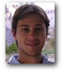

Researchers at CEAL
|
|
Raymundo Forradellas, PhD
Researcher
Director of CEAL (Logistics Studies and Applications Centre)
Director of Master in Logistics program (School
of Eng.,UNCuyo)
Science, Technology & Graduate
Education Director (School of Engineering, UNCuyo)
Professor, Industrial Engineering
Department
School
of Engineering, National University of Cuyo
|
 |
Ricardo Palma
Researcher
Industrial Engineer - Master in Logistics
PhD candidate, PhD in Engineering program (UNCuyo)
Professor, Industrial Engineering Department
School of Engineering, National
University of Cuyo
|
|  |
Martín Marchetta, PhD
Researcher
PhD in
Engineering (UNCuyo)
Master
Design
Global mention RICI (INPL, Nancy, France)
Information Systems Engineer (UTN)
Professor, Industrial
Engineering Department
School of Engineering, National
University of Cuyo
|
 |
Fernanda Garcia
Researcher
Master in Logistics (UNCuyo)
Master
Design
Global mention RICI (INPL, Nancy, France)
Information Systems Engineer (UTN)
Professor Master
in Logistics (School of Engineering, UNCuyo).
Professor MBA
(School of Economics, UNCuyo).
|
|
Daniel Díaz Araya
Researcher
Bachelor in Information Systems
PhD candidate,
PhD in Computer Science (UNICEN, Beca CONICET)
Student of Master in Logistics (UNCuyo)
Professor (School of Engineerong,
National University of
San Juan)
|
|
Claudia Sosa
Researcher
Bachelor in International Commerce
Student of Master in Logistics (UNCuyo)
|
 |
Carolina Vargas
Researcher
Industrial Engineer
Student of Master in Logistics (UNCuyo)
|
 |
Sandra Oviedo
Researcher
Bachelor in Information Systems
Student of Master in Logistics (UNCuyo)
|
|
|
Associated Consultants
|
|
Alfonso
Gambino Tramuta
Electronic Engineer.
Laboral Engineer.
Organizational Engineer (Pensilvania, USA).
MBA (Pensilvania, USA).
Master in Logistics (California, USA).
Specialist in Environmental (California, USA).
Specialist in Investment Projects (Universidad de Chile).
Professor Master in Logistics (UNCuyo).
Logistics Management advisor, Hº Cámara Senadores de
la Nación.
Coordinator of Logistics Strategies of Puertos del Litoral Argentino.
General coordinator of Efficient Energy Management (UTN).
Founder of the DIOCMA research group: Innovation and development for
fuel obtention through alternative methods (UTN).
Researcher project TELUES, Solid State Light techniques, Program for
Rational use of Energy (Universidad Tecnológica Nacional)
Member of the Marketing Tecnológico consulting group.
|
|
Darli Rodrigues
Vieira, PhD
Professor
Universidad Federal do Paraná (UFPR, Brasil)
Professor MBA in Logistic Systems Management
Professor in graduate programs (Dom Cabral Foundation)
Visiting Professor, Laval University (Canada)
Visiting Professor,
Université de Sorbonne (Francia)
Founder and ex-president of ABGP
(Asociação Brasileira de Gerenciamiento de Projectos)
|
|
Hugo Tapia
Civil
Engineer - Master in Logistics
Professor MBA
(School of Economic Sciences, UNCuyo)
|